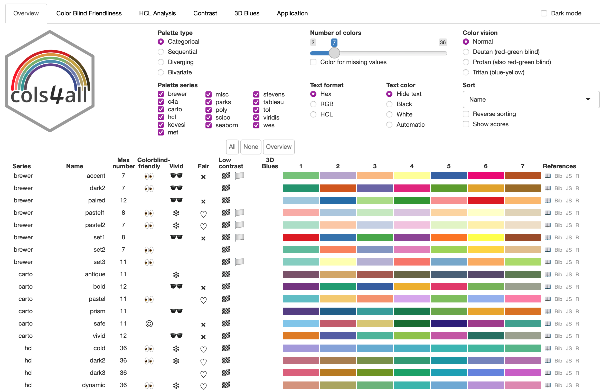
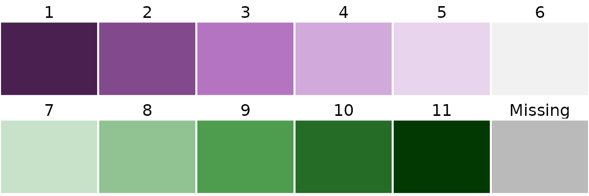
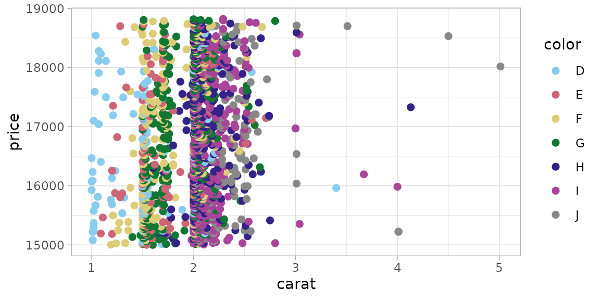
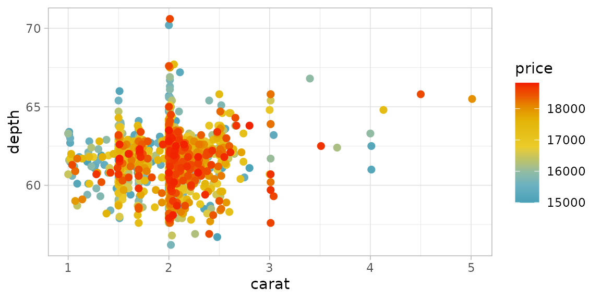

Introduction
Color is essential in many charts and maps. There are a lot of color
palettes to choose from: most visualization software tools have their
own palettes and there are many other series of color palettes, such as
ColorBrewer (Harrower and Brewer, 2003). To make life easier for R
users, there are a couple of packages that contain a large collection of
palettes, most notably pals (Wright, 2021) with 139 and
paletteer (Hvitfeldt, 2021) with 2569 (!) palettes.
However, people often cannot see the trees through the forest, so
therefore they tend to stick with the color palettes they know, or with
the most popular ones.
The cols4all package also contains a large collection of
palettes (to be precise 473 at the time of writing), but with the
central question: which palettes are good and why?
There is no simple answer, since there are many aspects to take into
account, which may have opposite effects. In cols4all we
examine the following aspects:
Color Blind Friendliness First and most importantly, is a palette suitable for colorblind people? About 1 out of 12 humans have a color vision deficiency, and we want to include them; hence the package name “colors for all”.
HCL Analysis Does a palette work well for statistical purposes? We analyse this with the HCL (hue-chroma-luminance) color space. Concrete questions for these analysis are the following. How vivid are colors? Do the colors stand out about equally (which we call fairness)? What hue ranges are used for quantitative color palettes?
Nameability (in development) Easy to name colors are also easy to remember. Therefore, it is beneficial to use a color palette with easy nameable colors.
Contrast What is the contrast between the colors in the palette? We focus on two specific questions: 1) Is there sufficient contrast with the background color (usually white or black)? This is especially needed for text but also point- and line charts. 2) Are border lines needed to separate colors?
3D Blues Does the palette contain blue colors that could result in a floating effect?
Currently, cols4all contains palettes from several popular and lesser known color palette series: “brewer”, “c4a”, “carto”, “hcl”, “kovesi”, “met”, “miscs”, “parks”, “poly”, “scico”, “seaborn”, “stevens”, “tableau”, “tol”, “viridis” , and “wes”. Stand-alone palettes that are included have been put in the series “misc” (miscellaneous). Own palettes series can be added as well.
Color palettes are organized and made consistent with each other. For instance, all sequential palettes go from light to dark. Furthermore, for each color palette a color for missing values is assigned, which is especially important for spatial data visualization. Currently we support several types: categorical (qualitative) palettes, sequential palettes, diverging palettes, and bivariate palettes (divided into four subtypes).

The figure above shows the main tool of this package, a dashboard. The first tab page contains an overview table of all palettes (given the input selection criteria). The other tab pages are for further palette-wise analyses.
Color palettes also are important in areas other than data visualization, such as arts, web design, and fashion. The same aspects apply as well here, but obviously different criteria apply: the colors of a dress don’t have to be distinguished by colorblind people, websites often contain colors that purposely stand out more than others, and there are paintings that purposely use visual illusions.
Related R packages
The foundation of this package is another R package: colorspace. We use this package to analyse colors. For this purpose and specifically for color blind friendliness checks, we additionally use colorblindcheck.
There are a few other pacakges with a large collection of color palettes, in particular pals and paletteer. There are a few features that distinguishes cols4all from those packages:
Color palettes are characterized and analysed. Properties such as color blindness, fairness (whether colors stand out about equally), and contrast are determined for each palette.
Bivariate color palettes are available (besides the three main palette types: categorical, sequential, and diverging).
Own color palettes can be loaded and analysed.
Color for missing values are made explicit.
Palettes are made consistent with each other to enable comparison. For instance, black and white are (by default) removed from categorical palettes. Another standard that we adapt to is that all sequential palettes go from light to dark and not the other way round.
There is native support for ggplot2 and tmap (as of the upcoming version 4).
There are a couple of exporting options, including (bibtex) citation.
Using cols4all
Installation
The cols4all is available on CRAN and can be installed
as follows
install.packages("cols4all", dependencies = TRUE)The latest development version can be installed as follows:
remotes::install_github("mtennekes/cols4all", dependencies = TRUE)Getting started
Load the package:
The main tool is a dashboard (shown above), which is started with:
c4a_gui()What types and series are available?
c4a_types()
#> type description
#> 1 cat categorical
#> 2 seq sequential
#> 3 div diverging
#> 4 bivs bivariate (sequential x sequential)
#> 5 bivc bivariate (sequential x categorical)
#> 6 bivd bivariate (sequential x diverging)
#> 7 bivg bivariate (sequential x desaturated)
c4a_series()
#> series description
#> 1 brewer ColorBrewer palettes
#> 2 c4a cols4all palettes (in development)
#> 3 carto Palettes designed by CARTO
#> 4 hcl Palettes from the Hue Chroma Luminance color space
#> 5 kovesi Palettes designed by Peter Kovesi
#> 6 met Palettes inspired by The Metropolitan Museum of Art
#> 7 misc Miscellaneous palettes
#> 8 miscs <NA>
#> 9 parks Palettes inspired by National Parks
#> 10 poly Qualitative palettes with many colors
#> 11 scico Scientific colour map palettes by Fabio Crameri
#> 12 seaborn Palettes from the Python library Seaborn
#> 13 stevens Bivariate palettes by Joshua Stevens
#> 14 tableau Palettes designed by Tableau
#> 15 tol Palettes designed by Paul Tol
#> 16 viridis Palettes fom the Python library matplotlib
#> 17 wes Palettes from Wes Anderson moviesHow many palettes per type x series?
c4a_overview()
#> series description cat seq div bivs
#> 1 brewer ColorBrewer palettes 8 18 9 2
#> 2 c4a cols4all palettes (in development) 9 NA 2 2
#> 3 carto Palettes designed by CARTO 6 21 7 NA
#> 4 hcl Palettes from the Hue Chroma Luminance color space 9 23 11 NA
#> 5 kovesi Palettes designed by Peter Kovesi NA 17 13 NA
#> 6 met Palettes inspired by The Metropolitan Museum of Art 33 8 14 NA
#> 7 misc Miscellaneous palettes 1 NA NA NA
#> 8 miscs 4 NA NA NA
#> 9 parks Palettes inspired by National Parks 22 5 3 NA
#> 10 poly Qualitative palettes with many colors 9 NA NA NA
#> 11 scico Scientific colour map palettes by Fabio Crameri 21 21 10 NA
#> 12 seaborn Palettes from the Python library Seaborn 6 4 2 NA
#> 13 stevens Bivariate palettes by Joshua Stevens NA NA NA 5
#> 14 tableau Palettes designed by Tableau 29 23 28 NA
#> 15 tol Palettes designed by Paul Tol 8 8 4 NA
#> 16 viridis Palettes fom the Python library matplotlib NA 7 1 NA
#> 17 wes Palettes from Wes Anderson movies 23 NA 1 NA
#> bivc bivd bivg
#> 1 1 1 NA
#> 2 NA 2 5
#> 3 NA NA NA
#> 4 NA NA NA
#> 5 NA NA NA
#> 6 1 NA NA
#> 7 3 NA NA
#> 8 NA NA NA
#> 9 NA NA NA
#> 10 NA NA NA
#> 11 2 NA 1
#> 12 NA NA NA
#> 13 NA NA NA
#> 14 NA NA NA
#> 15 NA NA NA
#> 16 NA NA NA
#> 17 NA NA NAWhat palettes are available, e.g diverging from the hcl series?
# Diverging palettes from the 'hcl' series
c4a_palettes(type = "div", series = "hcl")
#> [1] "hcl.blue_red" "hcl.blue_red2" "hcl.blue_red3" "hcl.red_green"
#> [5] "hcl.purple_green" "hcl.purple_brown" "hcl.green_brown" "hcl.blue_yellow2"
#> [9] "hcl.blue_yellow3" "hcl.green_orange" "hcl.cyan_magenta"Give me the colors!
# select purple green palette from the hcl series:
c4a("hcl.purple_green", 11)
#> [1] "#492050" "#82498C" "#B574C2" "#D2A9DB" "#E8D4ED" "#F1F1F1" "#C8E1C9"
#> [8] "#91C392" "#4E9D4F" "#256C26" "#023903"
# get the associated color for missing values
c4a_na("hcl.purple_green")
#> [1] "#868686"Plot these colors:
c4a_plot("hcl.purple_green", 11, include.na = TRUE)
Using cols4all palettes in ggplot2
library(ggplot2)
data("diamonds")
diam_exp = diamonds[diamonds$price >= 15000, ]
# discrete categorical scale
ggplot(diam_exp, aes(x = carat, y = price, color = color)) +
geom_point(size = 2) +
scale_color_discrete_c4a_cat("carto.safe") +
theme_light()
# continuous diverging scale
ggplot(diam_exp, aes(x = carat, y = depth, color = price)) +
geom_point(size = 2) +
scale_color_continuous_c4a_div("wes.zissou1", mid = mean(diam_exp$price)) +
theme_light()
Overview of functions
Main functions:
-
c4a_guiDashboard for analyzing the palettes -
c4aGet the colors from a palette (c4a_nafor the associated color for missing values) -
c4a_plotPlot a color palette
Palette names and properties:
-
c4a_palettesGet available palette names -
c4a_seriesGet available series names -
c4a_typesGet implemented types -
c4a_overviewGet an overview of palettes per series x type. -
c4a_citationShow how to cite palettes (with bibtex code). -
c4a_infoGet information from a palette, such as type and maximum number of colors -
.PEnvironment via which palette names can be browsed with auto-completion (using$)
Importing and exporting palettes:
-
c4a_dataBuild color palette data -
c4a_loadLoad color palette data -
c4a_sysdata_importImport system data -
c4a_sysdata_exportExport system data
Edit color palette data
-
c4a_duplicateDuplicates a color palette -
c4a_modifyModifies palette colors
ggplot2
-
scale_<aesthetic>_<mapping>_c4a_<type>e.g.scale_color_continuous_c4a_divAdd scale to ggplot2.
Color spaces
Visual perception, in particular colors, is complex. For the purpose of information visualization it is explained in an accessible way by Ware (2019). In this vignette, we briefly describe the color spaces that are needed to understand the functionality of cols4all.
The human eye has three types of cones (specific photoreceptor cells in the retina), which are sensitive to light of different wavelengths: long, medium, and short. Their peak sensitivities (of 565, 540, and 440nm respectively) correspond to the primary colors red, green, and blue respectively. In computer graphics, a color is usually defined as RGB, which is a mixture of those three primary colors. RGB colors are often represented in hex-format (e.g. #FF00FF), where the first two characters specify red, the third and fourth green and the last two blue. Therefore #FF00FF is purple. A standard RGB space in computer graphics is sRGB (which exactly defines the primary colors, the white point, and a so-called gamma correction which is needed to perceive a grayscale linearly).
To analyse color palettes, we also use the polarLUV color space, which is a transformation of the CIELUV space. In this space, known as HCL, a color is defined by three variables:
- Hue The hue of a color is how we call casually name colors: e.g. yellow, purple, blue, orange, etc. It is defined as a polar coordinate, so takes values from 0 to 360 degrees.
- Chroma The vividness or intensity of the color. The higher, the more colorful. The maximum chroma depends on the hue. Grayscale colors have 0 chroma. The maximum value depends the hue and luminance.
- Luminance The amount of light emitted from an object (e.g. a computer screen). It is similar to brightness, although the latter is a relative measure. It takes values from 0 to 100.
Indicators
Colorblind friendliness
First of all, we use the distance measure between two colors A and B from CIE as defined in 2000 (see Lindbloom, Bruce Justin. Delta E (CIE 2000).).
For simplicity, we apply two labels: colorblind friendly ☺ and colorblind unfriendly 👀. A palette without such label is classified in between. Our definition of these labels depend on the palette type:
- (categorical) The minimum distance metric
(
min_dist) is the minimum distance between any two colors for any color vision deficiency type.☺ (colorblind friendly):
min_dist >= 10-
👀 (colorblind unfriendly):
min_dist <= 2These numbers are parameters that can be changed via
c4a_options.
- (sequential) The minimum step metric
(
min_step) is used, which is the smallest distance between any two adjacent colors (for any color vision deficiency type).☺ (colorblind friendly):
min_step >= 5-
👀 (colorblind unfriendly):
min_dist <= 1Again, these numbers are parameters that can be changed via
c4a_options. Note that this metric is not very useful when a continuous scale is used. In that case, it is recommended to analyse the palette with say 7 or 9 colors.
- (diverging) The
min_stepmetric used in a similar way as for sequential palettes. In addition, the inter wing distance metric (inter_wing_dist) is used, which is the minimum color distance between any color in the left wing to any color in the right wing of the palette (for any color vision deficiency type).☺ (colorblind friendly):
min_step >= 5andinter_wing_dist >= 10-
👀 (colorblind unfriendly):
min_dist <= 1orinter_wing_dist <= 4These parameters can be changed via
c4a_options.
- (bivariate (seq x seq)) Three sequential palettes are extracted: a) the first column, b) the bottom row, and c) the diagonal. These are combined to form three diverging palettes: ab, ac, and bc. For each of these diverging palette, the same checks are applied as described above for regular diverging palettes.
- (bivariate (seq x cat)) For each row, the same checks apply as for a categorical palette
- (bivariate (seq x div)) Three sequential palettes are extracted: a) the first column, b) the middle column column, and c) the last column. These are combined to form three diverging palettes: ab, ac, and bc. For each of these diverging palette, the same checks are applied as described above for regular diverging palettes.
- (bivariate (seq x desaturated)) A diverging palette is formed from the first and the last column. The same checks are applied as described above for regular diverging palettes.
HCL analysis
Regarding the used hues, there is no simple good and bad. However, for quantitative palettes we distinguish
- (sequential)
- Single hue palettes (🖌) which are recommended for quantitative analysis, but harder to distinguish colors
- Spectral (🌈) which are easy to distinguish colors, but less suitable for quantitative analysis
- (diverging)
- Two-hue palettes (☯) each wing has its own distinct hue, which is highly recommended
- Spectral (🌈) which are easy to distinguish colors, but less suitable for quantitative analysis
Regarding the used chroma / vividness, we label a color palette
- vivid (🕶) if it contains a color with a chroma value of 100 or higher
- pastel (❉) if all colors have chroma values of at most 70
These threshold numbers can be configured via options (to do).
Pastel (low chroma) colors are recommended for space-filling visualizations, like maps and bar charts. Vivid (high chroma) colors for small objects, such as dots, lines, and text labels.
We also use the chroma and luminance values of palette colors to find out whether some colors stand out more than other colors. Ideally, a categorical palette should contain colors that stand out about equally (for otherwise, one color will draw more attention than another, which may bias our perception and interpretation of the shown data). Colors with a high chroma value stand out more than less chromatic colors. Furthermore, against a bright background, dark colors (low luminance) stand out more, while bright colors (high luminance) stand out more against a dark background. Luminance is only considered for categorical palettes, because quantitative palettes (sequential and diverging) often map a numeric variable to luminance.
Let us define the luminance range (Lrange) as the
maximum minus the minimum luminance value of the palette and the chroma
range (Crange) as the maximum chroma value minus the
minimum chroma value.
Regarding Fairness we consider two metrics: the
luminance range (Lrange) and the chroma range
(Crange). We call a palette:
-
fair (♡) if
Crange <= 50and (for categorical palettes only)Lrange <= 30 -
unfair (⨯) if
Crange <= 80or (for categorical palettes only)Lrange >= 50
Note that harmonic color palettes are usually not color blind friendly. Furthermore, when the luminance values of the colors are about equal, the contrast of those colors is low, which requires the use of border lines (see below).
Contrast
The border between two colored shapes appears wobbly when the colors are equally luminant (bright), no matter what hue (red, blue, etc.) they have. This visual illusion is called equiluminance.
The contrast ratio is a measure for equiluminance,
calculated as CR = (L1 + 0.05) / (L2 + 0.05), where
L1 and L2 are the luminances (normalized
between 0 and 1) of the lighter and darker colors, respectively. Note
that the minimum contrast ratio is 1 and the maximum 21.
In the overview table, there are three flags that indicate low
contrast (CR < 1.2):
- 🏁: Between two colors of the palettes
- 🏳: Between one color of the palette and white
- 🏴: Between one color of the palette and black
The go-to solution to prevent wobbly borders is by using black or white (depending of the lightness of the colors) border lines.
3D Blues
Pure blue colors, by which we mean a 0 or very low number for the R (red) and G (green) channels and a high number for the B (blue) channel may cause a visual illusion called chromostereopsis. This effect is especially prominent when blue objects are shown next to red objects against a black background.
The table column “3D Blues” indicates when a palette contains a pure blue color. The used symbol is B7#9 (which refers to a music chord used in blues music).
References
Harrower M, Brewer CA (2003). “ColorBrewer.org: An Online Tool for Selecting Colour Schemes for Maps.” The Cartographic Journal, 40(1), 27-37.
Hvitfeldt E. (2021). paletteer: Comprehensive Collection of Color Palettes. version 1.3.0. https://github.com/EmilHvitfeldt/paletteer
Ware, C (2019). Information Visualization - Perception for Design - 4th Edition. Elsevier
Wright K (2021). pals: Color Palettes, Colormaps, and Tools to Evaluate Them. R package version 1.7, https://CRAN.R-project.org/package=pals.